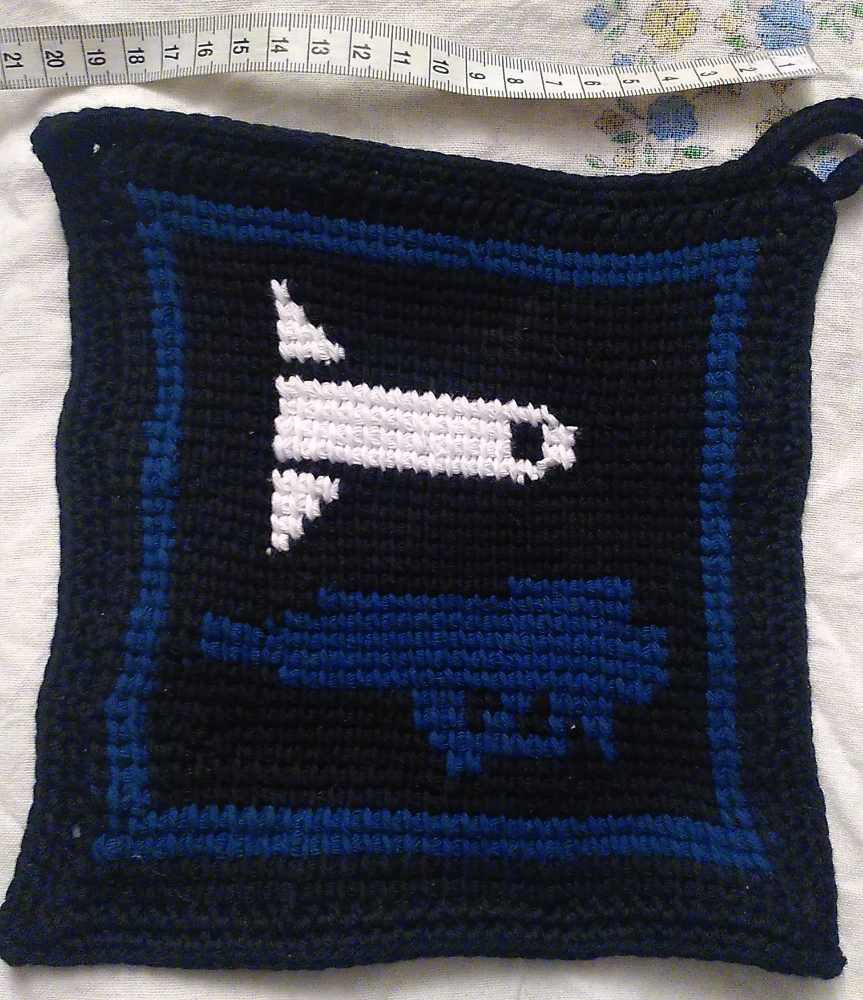
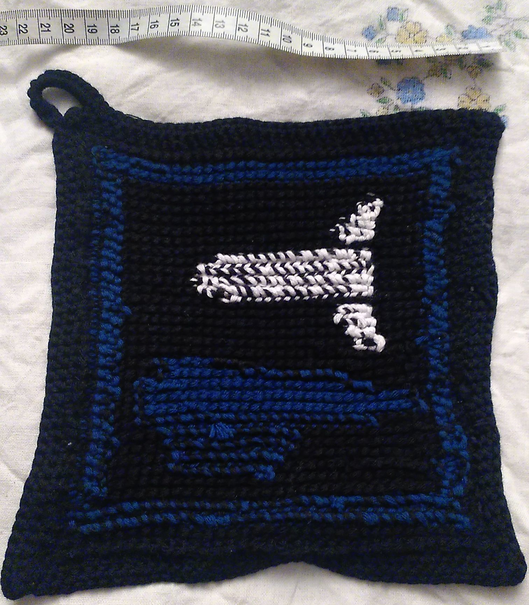
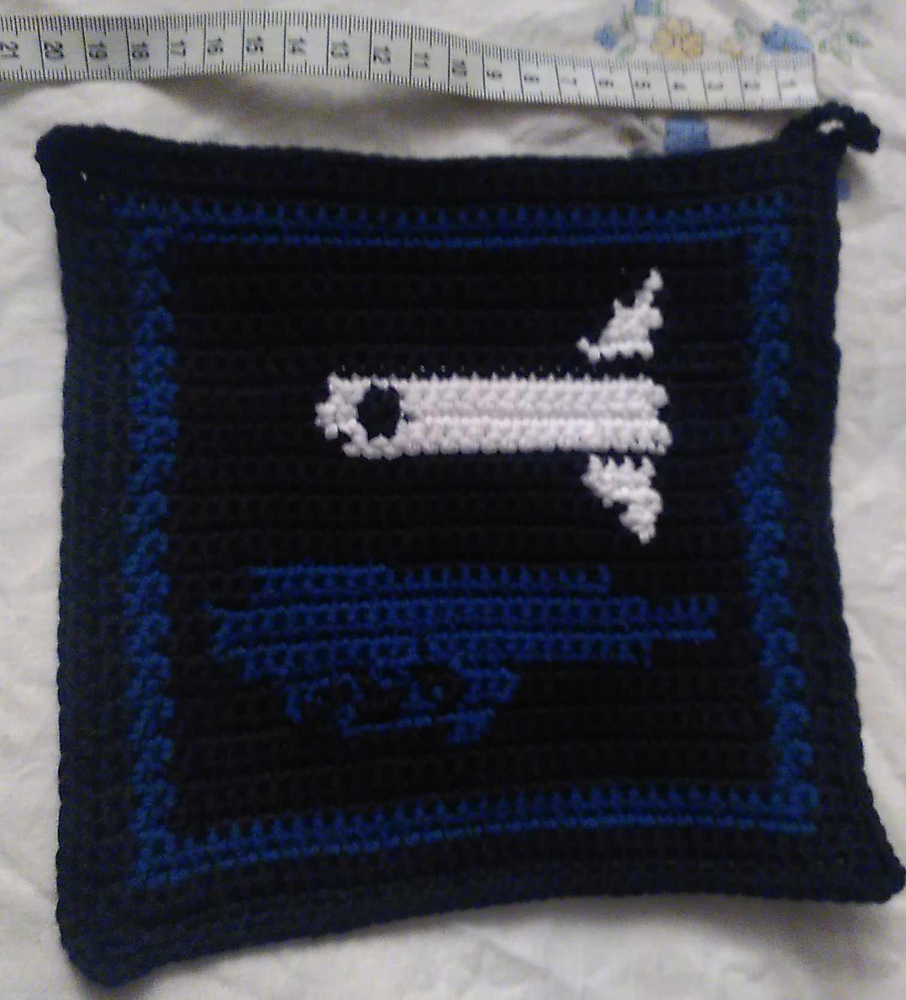
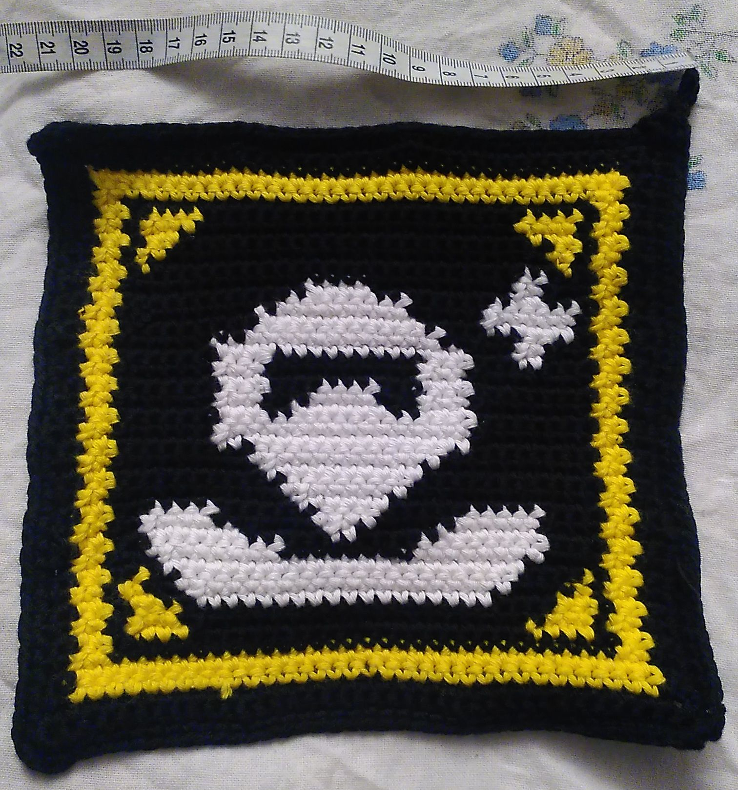
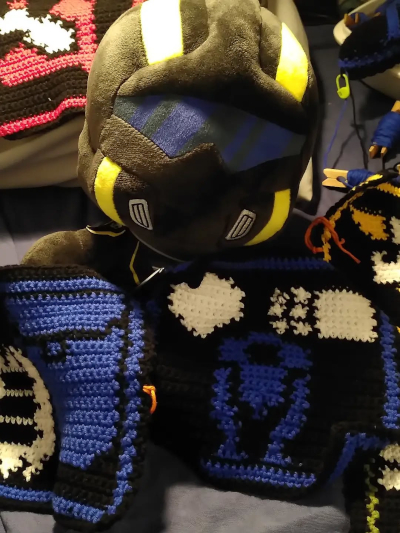

Stratagem
Pixelansicht der Stratagems. Zum Beispiel als Häkelvorlage. Übersicht der Stratagems. Das verwendete Raster ist 38x38 Kästchen.
Seitlich sind Pfeile eingezeichnet, die mir als Gedächtnisstütze für die Häkelrichtung dienen. Die werden z.B. beim tunesischen Häkeln
(für Topflappen empfohlen) nicht benötigt. Ich versuche Bilder von den fertigen hinzuzufügen. Gedacht waren die Vierecke als Schal aber das
wird jetzt glaub doch erst einmal eine Granny Square Jacke... PS: Ich hab die Erste Reihe als Luftmaschenkette gehäkelt und auf dem Rückweg
in die kleinen Schlaufen auf der Rückseite gestochen (= auf der Unteren Seite sieht es dann nach normalen Maschen aus.)
Es werden nach und nach die Vorlagen dazu kommen, hoffe ich. Ein paar habe ich bereits erstellt. Dann hat Schatz mir eine antike Singer Nähmaschine
geschenkt. Diese (Grandma Dorothy) hat dann erstmal dem Tablet gezeigt, wer der neue Chef im Haus ist (wollte unter die Maschine schauen, die
Sicherung war nicht drin und die is auf den Bildschirm geknallt. Also gabs erst einmal einen neuen Bildschirm. Tablet is wieder daheim, nach und
nach werd ich die weiter bearbeiten. Die Website wollt ich nur schonmal so weit vorbereiten, dass ich da unabhängig mit dem Hochladen bin.)
Da es unterschiedliche Möglichkeiten gibt, die quadrate zu erstellen, versuch ich hier Beispiele einzufügen.
Den Spear habe ich genommen, da Schatz den verschenken möchte. als "besseren" Vergleich, werde ich auch Reinforce
und Resupply anfügen.
PS: Ist für den privaten Gebraucht gedacht. Würd mich über eine Nachricht freuen, wie es verwendet wurde und ggf. Referenzbilder benutzen darf.
Auch gerne über Instagram: raziel_draganam
PPS: Die Site ist extra anders gestaltet als der Rest der Website. Da ich die Website noch ändern möchte ohne die Vorlagenlinks zu
zerstören.
| Bild Vorderseite | Bild Rückseite | Häkelart | Wolle | Maße | Notiz |
|---|---|---|---|---|---|
 |
 |
Tunesisch | Topflappengarn von WollButt | ca. 18x18 Vor der Umrandung | Erste Versuch, tunesisch zu häkeln. Auf der Rückseite sieht man den deutlichen Unterschied. Danach ist mir die Nadel abgebrochen, daher sind die späteren normal gehäkelt. |
 |
x | Normal | Topflappengarn von WollButt | ca. 18x18 vor Umrandung | Spear - Topflappengarn. Hier sind die Pfeile seitlich in Einsatz gekommen. |
| x | Normal | Schulgarn von WollButt | x | Spear - Schulgarn. Bild kommt noch | |
 |
x | Normal | Topflappengarn WollButt | ca. 20x20 vor Umrandung | Reinforce - Topflappengarn, normal gehäkelt. |
| x | Normal | Schulgarn WollButt | x | Reinforce - Schulgarn, normal gehäkelt. Als Vergleich |
Offensive Stratagems
Supply Permit
Defensive Permit
Other

